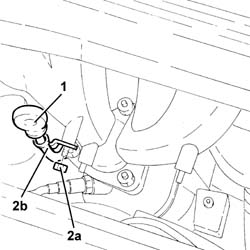
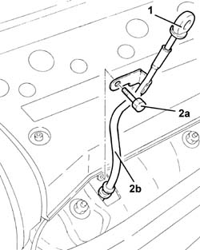
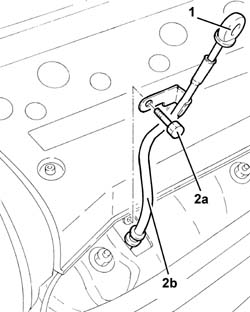
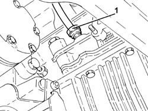
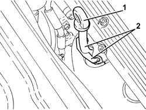
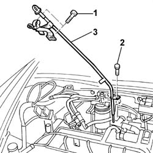
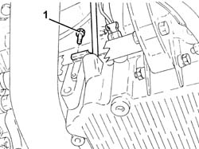
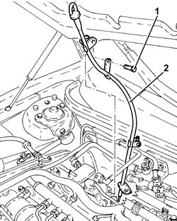

1084A16 oil dip stick pipe - r r
- Path
- Procedures > 10 ENGINE > 1084 ENGINE LUBRICATION SYSTEM > 1084A indicators/check devices > 1084A16 oil dip stick pipe - r r
- Kind
- repair procedure (removal / refitting; the operation number is the code)
- Applies to
- all engines; all production periods
- Interactive page
- https://sloeber94.github.io/elrnDB-a147/en/#/3024893
Applies to: engines: 1.6 TS; all production periods; only with equipment: 103 CV
 Removing
Removing
 Refitting
RefittingProceed with the removal 1072C44 exhaust manifold heat shield on bulkhead - r+r .
1. Remove the engine oil dipstick.
2. Undo the nut (2a) and remove the engine oil dipstick pipe (2b).

Applies to: engines: 1.6 TS; all production periods; only with equipment: 103 CV
Refitting
RemovingPlace the tube for the engine oil dipstick back in its housing, and secure it using the nut.
Place the engine oil dipstick back in its seating.
Proceed with the refitting 1072C44 exhaust manifold heat shield on bulkhead - r+r .
Applies to: engines: 1.6 TS; all production periods; only with equipment: 120 CV
Removing
Refitting1. Remove the engine oil dipstick.
2. Undo the nut (2a) and remove the engine oil dipstick pipe (2b).

Applies to: engines: 1.6 TS; all production periods; only with equipment: 120 CV
Refitting
RemovingPlace the engine oil dipstick tube back in its housing and fix it using the bolt.
Place the engine oil dipstick back in its seating.
Applies to: engines: 2.0 TS; all production periods
Removing
Refitting1. Remove the engine oil dipstick.
2. Undo the bolt (2a) and remove the engine oil dipstick pipe (2b).

Applies to: engines: 2.0 TS; all production periods
Refitting
RemovingPlace the engine oil dipstick tube back in its housing and fix it using the bolt.
Place the engine oil dipstick back in its seating.
Applies to: engines: 3.2 V6; all production periods
Removing
RefittingPosition the vehicle on the ramp.
Proceed with removal 7055B54 under-engine guard - r r .
1. Undo the nut securing the engine oil dipstick to the engine block.

Applies to: engines: 3.2 V6; all production periods
1. Withdraw the oil level dipstick.
2. Remove the tube for the engine oil dipstick releasing it from the fastenings on the upper bracket.

Applies to: engines: 3.2 V6; all production periods
Refitting
RemovingPlace the tube for the engine oil dipstick back in its housing, and secure it to the upper bracket.
Tighten the nut securing the tube for the oil dipstick to the engine block.
Proceed with refitting 7055B54 under-engine guard - r r .
Place the engine oil dipstick back in its housing.
Remove the car from the ramps.
Applies to: engines: 1.9 JTD 8V; all production periods
Removing
Refitting1016A10 sound-proofing cover - r + r
1. Undo the upper engine oil dipstick tube bolts.
2. Unscrew the lower engine oil dipstick pipe bolts.
Undo the collars and release the connected electrical wiring, release the timing sensor from its collar.
3. Remove guide pipe for the engine oil dipstick.

Applies to: engines: 1.9 JTD 8V; all production periods
Refitting
RemovingFit the engine oil dipstick tube.
Secure the electrical wiring and timing sensor to the engine oil dipstick tube.
Tighten the lower bolt securing the engine oil dipstick tube.
Tighten the upper bolt securing the engine oil dipstick tube.
Applies to: engines: 1.9 JTD 16V; all production periods
Removing
RefittingPosition the vehicle on the ramp.
Proceed with removal 7025A12 Engine front sound insulation COVER - R.R. .
Proceed with removal 7025A14 Bonnet LID - R.R. .
Proceed with removal 1016A10 sound-proofing cover - r + r .
Proceed with removal 7055B54 under-engine guard - r r .
1. Undo the lower bolt fastening the engine oil dipstick pipe to the crankcase sump.

Applies to: engines: 1.9 JTD 16V; all production periods
1. Undo the upper bolt fixing the engine oil dipstick tube to the pressure pump mounting.
2. Remove the tube for the engine oil dipstick releasing it from the fastenings on the electrical wiring.

Applies to: engines: 1.9 JTD 16V; all production periods
Refitting
RemovingPlace the tube for the engine oil dipstick back in its housing, and secure it to the electrical wiring using the bands.
Tighten the upper bolt fixing the engine oil dipstick pipe to the pressure pump mounting.
Tighten the lower bolt fixing the engine oil dipstick pipe to the crankcase sump.
Proceed with refitting 7055B54 under-engine guard - r r .
Proceed with refitting 1016A10 sound-proofing cover - r + r .
Proceed with refitting 7025A14 Bonnet LID - R.R. .
Proceed with refitting 7025A12 Engine front sound insulation COVER - R.R. .
Remove the car from the ramps.
Topics linked from this page (5)
- 1016A10 sound-proofing cover - r + r
- 1072C44 exhaust manifold heat shield on bulkhead - r+r
- 7025A12 Engine front sound insulation COVER - R.R.
- 7025A14 Bonnet LID - R.R.
- 7055B54 under-engine guard - r r
Topics that link to this page (10)
- 1020A20 crank case oil sump - r + r clean seals for sealant application
- 1020D14 front crank shaft oil seal cover - r + r and replace seals for versions with oil pump on crank shaft, timing side
- 1020D26 flywheel side oil seal cover - r+r
- 1020D30 oil seal cover, fly wheel side - r + r and replace seals
- 1060E40 supplementary pressure pump - r r
- 1084B26 emgine oil intake duct - r r
- 2710A32 intermediate drive shaft bearing support - r + r with intermediate drive shaft removed
- 2710A35 intermediate drive shaft mount - r r
- 4130B32 power steering pump mount - r r
- 5530A10 alternator - r+r